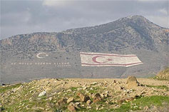

Republic of Cyprus Flag and other Flags in Cyprus
"Turkish Republic of Northern Cyprus" flagThe "TRNC" flag Flags painted on Pentadaktylos In 1974 Turkey invaded and occupied the northern third of the Republic of Cyprus. On November, 15 1983 Turkey unilaterally declared this occupied territory as an independent state, calling it the "Turkish Republic of Northern Cyprus", an action which was immediately condemned by the United Nations with the Resolution 541. The flag of the illegal and non-recognized internationally "TRNC" is based on the model of the Turkish national flag. It is white and features a red star, a crescent and two thin horizontal red lines near the top and the bottom of the flag. In an effort to further provoke the victims of the Turkish invasion the Turkish occupation army painted two extremely large flags on the sides of Pentadaktylos Mountain range. Each of these flags is about 450 meters wide and covers an area which is more than 4 football fields. They can be seen from many parts of the free areas of the Republic of Cyprus. The "TNRC" flag in the news
|